1
Muat Turun & Pasang
Pilih Store, EXE atau ZIP. Klik sahaja — data hadis penuh (~1 GB) sudah disertakan dalam muat turun.
62,169 hadis daripada 9 kitab Kutub al-Tis'ah — teks Arab penuh, terjemahan 4 bahasa, darjat ulama dan syarah. Carian kata kunci dan carian makna AI berjalan serentak, berfungsi sepenuhnya tanpa internet.
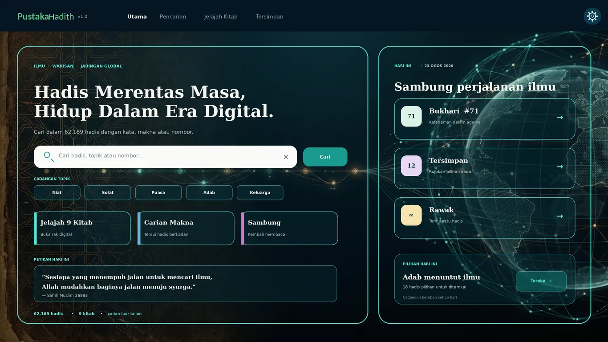
Tiada pendaftaran, tiada Python, tiada konfigurasi. Pasang, cari, baca.
Pilih Store, EXE atau ZIP. Klik sahaja — data hadis penuh (~1 GB) sudah disertakan dalam muat turun.
Tanya soalan biasa. Carian kata kunci (FTS5) dan carian semantik AI berjalan serentak, walaupun tanpa internet.
Arab + 4 bahasa, darjat ulama, syarah ringkas. Simpan penanda buku atau kongsi terus ke WhatsApp.
Tema Aqua Glass, rak digital interaktif, susunan dwibahasa Arab–Melayu dan panel statistik yang bersih.
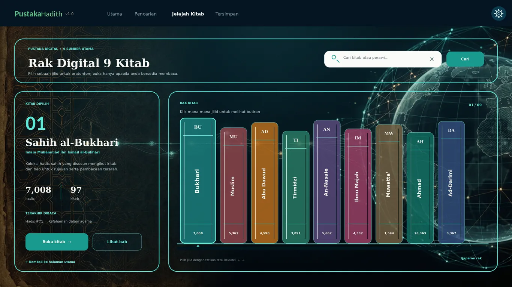
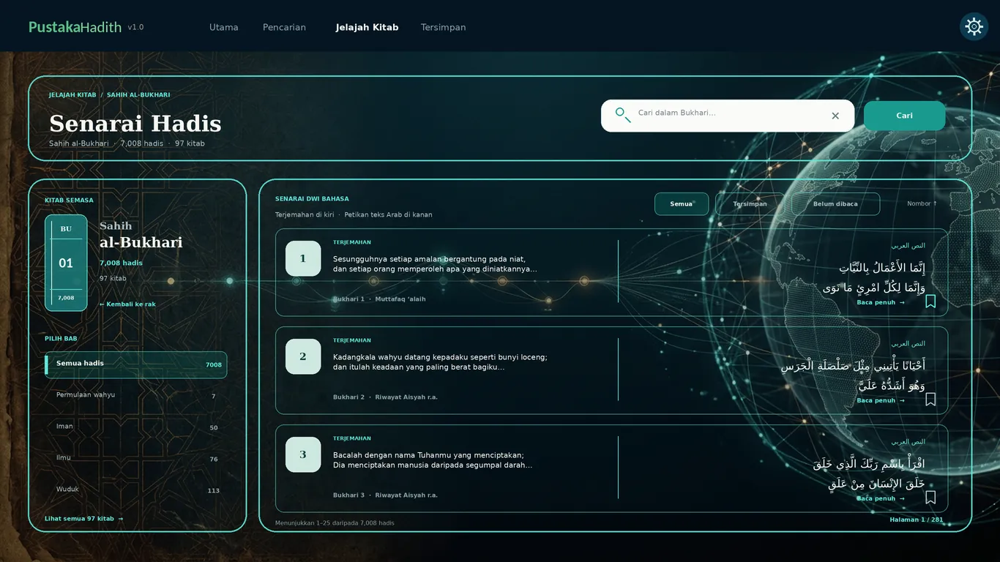
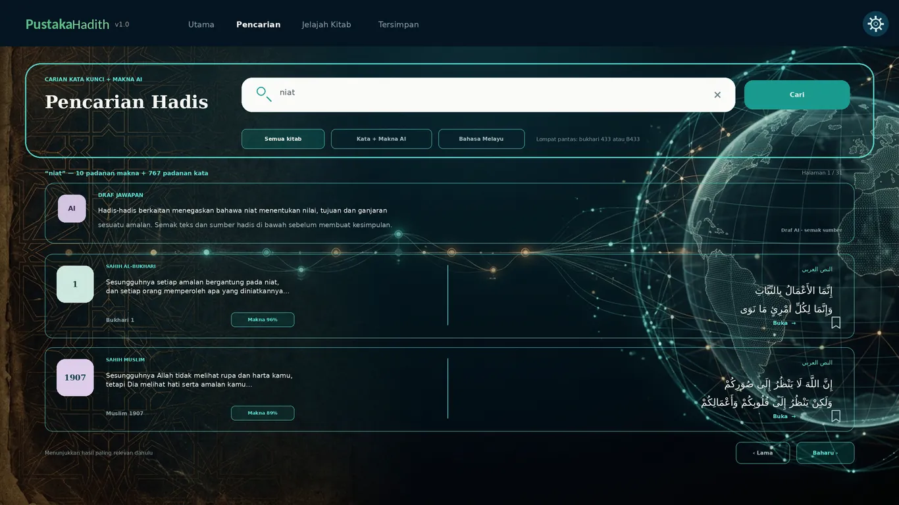
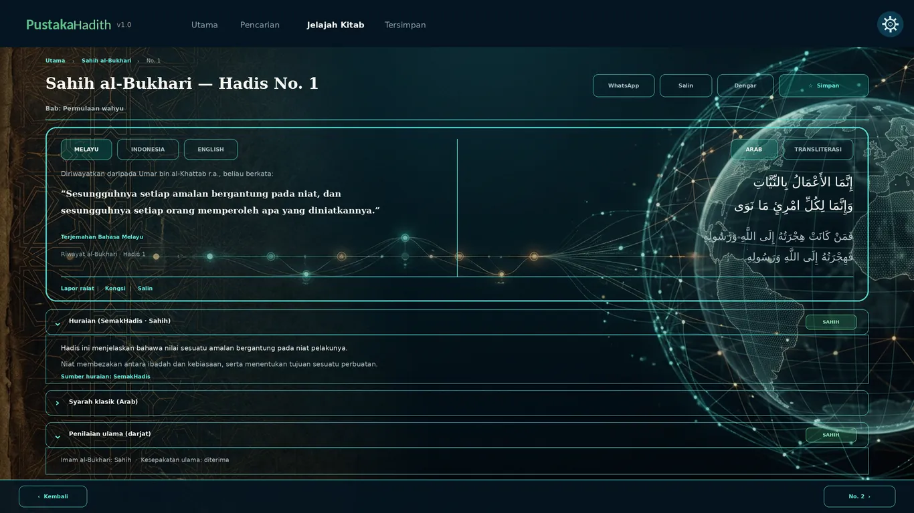
Gabungan carian moden, sumber berautoriti dan susun atur yang selesa untuk pengajian harian dan penyelidikan.
Tanya makna, bukan sekadar perkataan. Carian kata kunci (FTS5) dan carian semantik AI berjalan serentak — cari ikut maksud, bukan ejaan. Jawapan draf AI dipaparkan di atas hasil.
63,930 klasifikasi Sahih/Hasan/Da'if mengikut penilaian ulama moden — dipaparkan sebagaimana adanya, tanpa memilih antara pendapat berbeza.
Navigasi ikut tema, hierarchical dan cepat ke mana-mana hadis.
Susunan dua lajur — terjemahan di kiri, petikan Arab (RTL) di kanan, selari ayat demi ayat.
Simpan kegemaran, sambung bacaan, lompat terus dengan Ctrl+G atau taip B433.
Semua data dalam SQLite tempatan. Tiada akaun, tiada iklan, tiada internet selepas pemasangan.
Store (auto-update), EXE (pemasang) atau ZIP portable. Tiada perisian tambahan diperlukan.
Seluruh himpunan Kutub al-Tis'ah — daripada Sahih al-Bukhari hingga Muwatta' Malik, boleh dijelajah ikut bab.
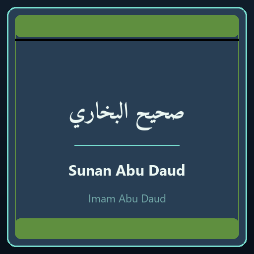
Imam al-Bukhari
7,008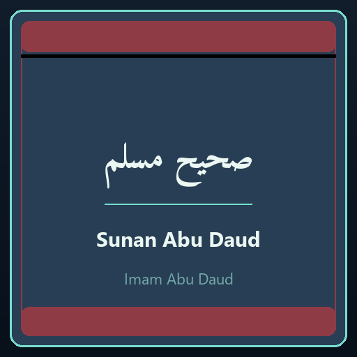
Imam Muslim
5,362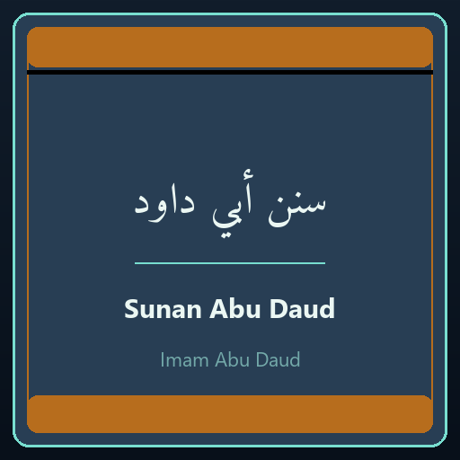
Imam Abu Daud
4,590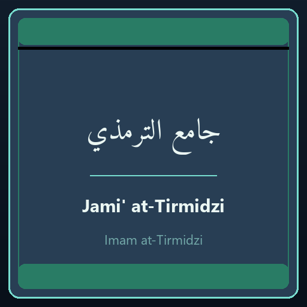
Imam at-Tirmidzi
3,891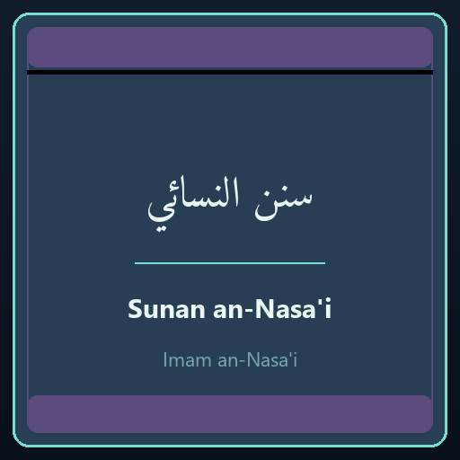
Imam an-Nasa'i
5,662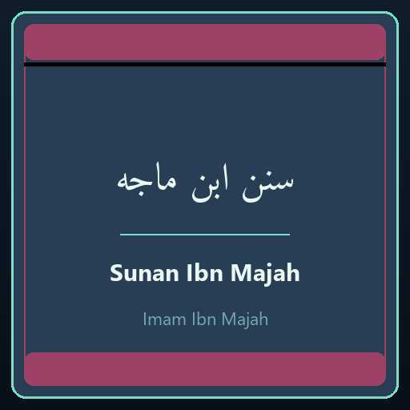
Imam Ibn Majah
4,332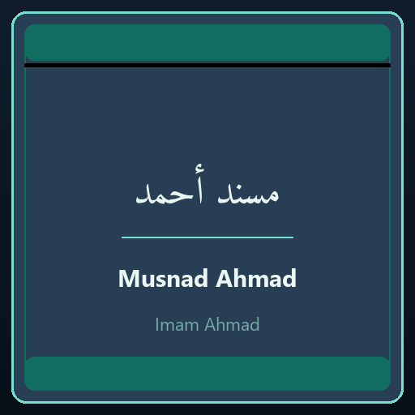
Imam Ahmad
26,363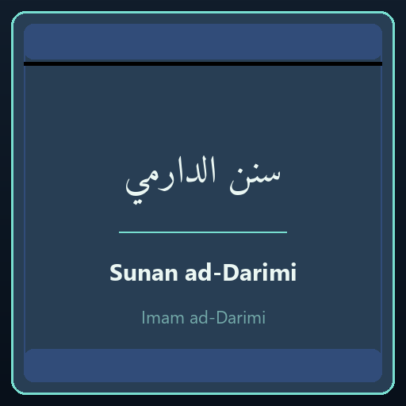
Imam ad-Darimi
3,367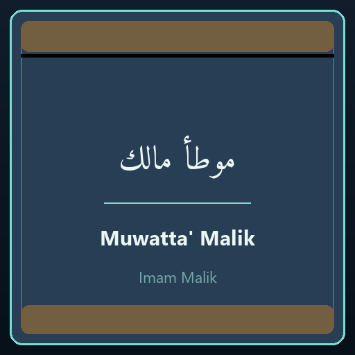
Imam Malik
1,594jumlah hadis
keseluruhan
Untuk bahan agama, jangkaan yang salah lebih berbahaya daripada ciri yang kurang.
Aplikasi ini tidak memberi hukum dan tidak menjawab persoalan fiqh. Untuk keputusan agama, rujuk ulama bertauliah.
Terhad kepada 9 kitab yang disebut. Hadis yang beredar di media sosial mungkin bukan daripada koleksi ini.
Memahami hadis memerlukan ilmu alat — konteks, sanad dan kaedah usul. Aplikasi menyediakan teks; ulama yang membimbing pemahaman.
Tanpa perlu Python atau persediaan rumit — jalankan terus dari Windows. Data dikekalkan semasa naik taraf.
v1.2.0 telah disahkan (certified) & tersedia di Microsoft Store dengan kemas kini automatik. MSIX 783 MB berserta data hadis penuh.
Pemasang Inno Setup berbahasa Melayu. Pilih lokasi pemasangan, buat pintasan desktop, terus guna.
Klik kanan → Extract All, jalankan PustakaHadith.exe. Tiada pemasangan — padam folder = selesai.
Sebelum atau selepas anda memasang.
Kami sedia membantu. Semua kod di GitHub — boleh fork, sumbang & guna.
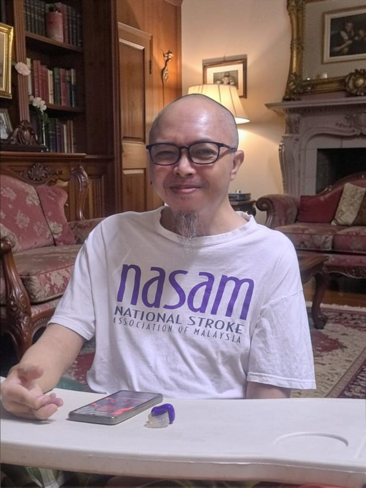
“Percaya pada Allah, percaya pada diri sendiri, dan jangan berhenti.”